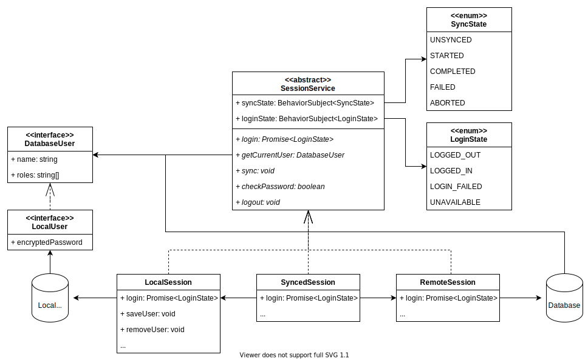

Session Handling, Authentication & Synchronisation
This document aims at describing the architecture of the offline-first session handling, focussing on the (Synced)SessionService.
Components
The following diagram show which components are involved in managing the session.
.
There are three implementations of the SessionService interface: LocalSession, RemoteSession and the SyncedSession.
They are described in more detail in the SessionServices section.
State
Lets talk about state for a second. With an offline-first synced session, there is lots of state involved needing to be synced. The following enums are used to define the possible states.
- LoginState At the beginning or after logout the state is
LOGGED_OUT. After successful login, the state changes toLOGGED_IN. Entering wrong credentials will result inLOGIN_FAILED. If login is not possible at the moment (due to bad or no internet) the state isUNAVAILABLE. - SyncState At the beginning or without internet the state is
UNSYNCED. Once the user logs in the state changes toSTARTED. If no problems occur, the state will change toCOMPLETED, once all data is synced. If an error occurs the state changes toFAILED.
Database User
The DatabaseUser interface mirrors parts of the user documents as it is used by CouchDB (see here).
The most important properties are the name which is equivalent to the username and the roles which is an array of roles the user has.
The name can be used to assign e.g. notes to a user or find the User entity in the database.
The roles are used to check whether the user has permissions to visit certain pages or edit certain entities.
Local User
The LocalUser interface is used by the LocalSession to store user information in the local storage.
Additionally to the fields of the DatabaseUser interface it holds the encrypted password together with information how the password is encrypted.
This can be used to verify the password later on.
Session Services
The SessionService interface provides methods for login, logout and user access.
These methods need to be implemented to create a working session.
Local Session
The LocalSession manages a session without internet. It can be used for demo purposes or when no network connection is available.
The session loads LocalUser objects from the local storage and uses the encrypted password to validate login credentials.
It provides an additional method to save DatabaseUser objects together with the password to the local storage.
If the password matches, it returns LoginState.LOGGED_IN.
If the username matches an existing username but the password is wrong, it returns LoginState.LOGIN_FAILED.
If the username does not match any saved users, it returns LoginState.UNAVAILABLE.
Remote Session
The RemoteSession directly authenticates against a CouchDB instance.
It uses the _session endpoint of the CouchDB API for cookie-authentication.
Once successfully logged in, a cookie is stored and sent with any further request to CouchDB.
This cookie is valid for 10 minutes and renewed by CouchDB if regular requests occur.
If the password matches, it returns LoginState.LOGGED_IN.
If CouchDB returns are 401 error (unauthorized), it returns LoginState.LOGIN_FAILED.
If the requests fails with an error message other thatn 401, it returns LoginState.UNAVAILABLE.
Synced Session
The SyncedSession combines the LocalSession and the RemoteSession.
It starts the login workflow of both the RemoteSession and the LocalSession at the same time.
It first only waits for the LocalSession because this is faster and also works without internet.
Only if the local login fails the SyncedSession waits for the remote login.
If the remote login succeeds, the returned user object is saved through the LocalSession to allow a local login next time.
The following table shows all possible return values of the local and the remote session and the handling of the synced session.
The error message is shown in the LoginComponent
| Remote Login | Local Login | Synced Login | Error Message |
|---|---|---|---|
| LOGGED_IN | LOGGED_IN | login + sync | - |
| LOGGED_IN | LOGIN_FAILED | sync + login | - |
| LOGGED_IN | UNAVAILABLE | sync + login | - |
| LOGIN_FAILED | LOGGED_IN | login -> logout | - |
| LOGIN_FAILED | LOGIN_FAILED | LOGIN_FAILED | Username and/or password incorrect |
| LOGIN_FAILED | UNAVAILABLE | LOGIN_FAILED | Username and/or password incorrect |
| UNAVAILABLE | LOGGED_IN | login + retry | - |
| UNAVAILABLE | LOGIN_FAILED | LOGIN_FAILED | Username and/or password incorrect |
| UNAVAILABLE | UNAVAILABLE | UNAVAILABLE | Please connect to the internet and try again |
To illustrate this table, the following flow-diagram shows what happens in the case RemoteLogin: LOGGED_IN and LocalLogin: LoginFailed.
This case happens when the password of a user has been changed on the server, but not locally and the users logs in with the new password.
 .
.
The flow starts by the user entering a username and a password in the LoginComponent.
First the user credentials are validated against the local session.
This fails possible because the saved password does not match the user-entered one.
Then the synced session waits for the remote login to finish.
In this case the remote login succeeds and the DatabaseUser object can be retrieved from the remote session.
The synced session then stores the DatabaseUser in the local session and after that tries to log in against the local session.
Now that the DatabaseUser has been saved with the new password the local log in succeeds and returns LoginState.LOGGED_IN.